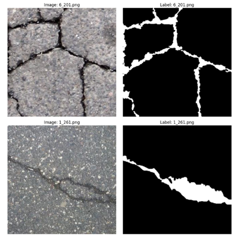
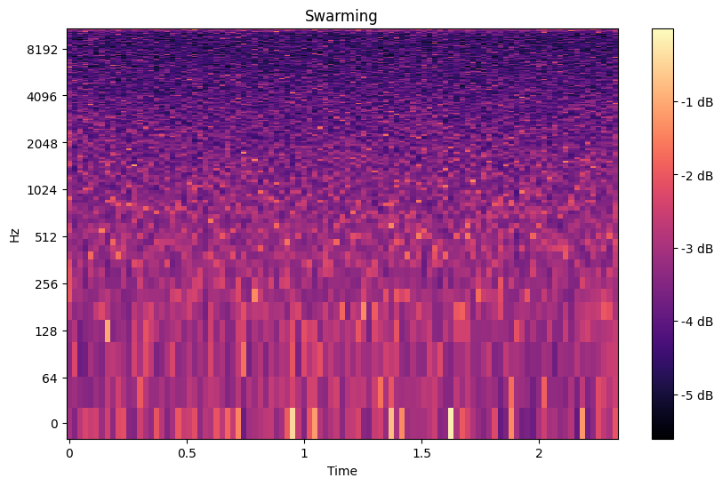
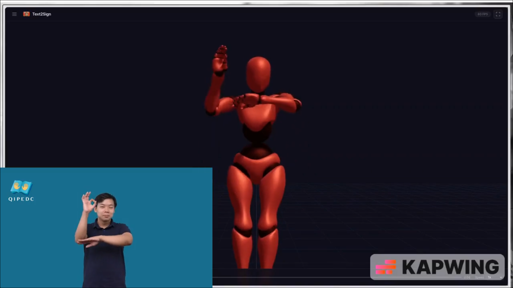
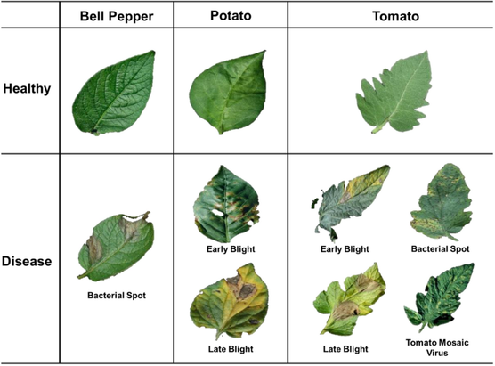

U-DeepCrack
Road crack segmentation research combining architectural reconstruction and systematic loss-function optimization.
23 static loss configurations · Cross-dataset evaluation
View on GitHub →HELLO, I'M
I am Hoang Tran, an AI/ML Engineer working on applied machine learning and deep learning systems. My work focuses on computer vision, object detection, semantic segmentation, audio processing, and lightweight neural networks.
I work hands-on with PyTorch and end-to-end AI pipelines, from model architecture and feature representation to training, evaluation, optimization, and deployment-oriented development.
EXPERIENCE
SEP 2025 — DEC 2025
AI Engineer & Python Developer Intern
Software modernization, source-code analysis, Python data-processing automation, cloud environments, and engineering workflows.
PROJECTS

Road crack segmentation research combining architectural reconstruction and systematic loss-function optimization.

Non-invasive swarming detection using acoustic feature engineering, model tuning, and ensemble learning.

End-to-end Vietnamese text-to-sign system spanning language processing, motion composition, 3D avatar retargeting, backend services, and interactive visualization.
View on GitHub →
Plant disease recognition study spanning handcrafted features, pretrained deep features, CNNs, and Vision Transformers.
PUBLICATIONS
Medical Imaging · DICOM Images Preprocessing
Evaluation across 6,471 curated VinDr-CXR images and 14 abnormality classes.
Lightweight Object Detection · Tiny Objects · YOLO
SAGRI high-resolution detail injection, Key-Value Compressed Attention (KVCA).
Code →SKILLS
PyTorch · TensorFlow · Scikit-learn · Deep Learning · Computer Vision · Object Detection · Segmentation
OpenCV · NumPy · Pandas · librosa · Image Processing · Audio Processing · Feature Engineering
FastAPI · Celery · Redis · PostgreSQL · MySQL · SQLite
Docker · Git · Linux · AWS · Azure · Jira · LaTeX
AWARDS
2026 — Best Paper Award, APWeb-WAIM 2026 · Special Track
2026 — Research Connect · Top 12 Finalist · Team Leader, Road Crack Segmentation
2025 — Research Connect · Top 12 Finalist · Team Leader, LeafNet
BROADER AI INTERESTS
My interests extend beyond computer vision to language, retrieval, and multimodal AI systems.
Natural Language Processing & Language Models
Retrieval-Augmented Generation (RAG)
LLM Applications & AI Agents
Multimodal AI Systems
CONTACT
I'm open to AI Engineering opportunities and collaborations.